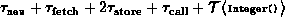
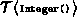

Data Structures and Algorithms
with Object-Oriented Design Patterns in Java
Data Structures and Algorithms
with Object-Oriented Design Patterns in JavaIn this section we state the last axiom needed for the detailed model of the Java Virtual Machine. This axiom addresses the time required to create a new object instance:
Axiom The time required to create a new object instance using the new operator is a constant,. This time does not include any time taken to initialize the object.
By applying Axioms  , , and ,
we can determine that the running time of the statement
, , and ,
we can determine that the running time of the statement
Integer ref = new Integer (0);is , where  is the running time of the Integer constructor.
 Copyright © 1998 by Bruno R. Preiss, P.Eng. All rights reserved.
Copyright © 1998 by Bruno R. Preiss, P.Eng. All rights reserved.